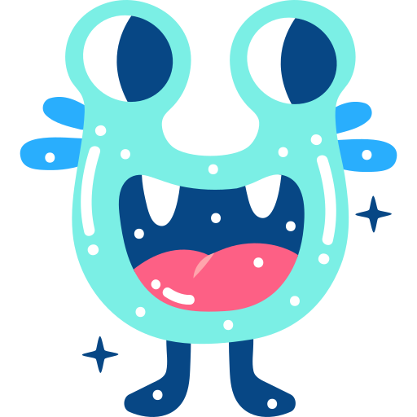

¬
Negação
não, não é o caso, não é verdade que
∧
Conjunção
e, também, além de
∨
Disjunção
e, também, além de
→
Implicação
apenas se, se, então
↔
Bicondicional
se e somente se
Gerador de Conectivos Lógicos:

Os conectivos encontrados foram:
Digite uma frase para encontrar os conectivos!